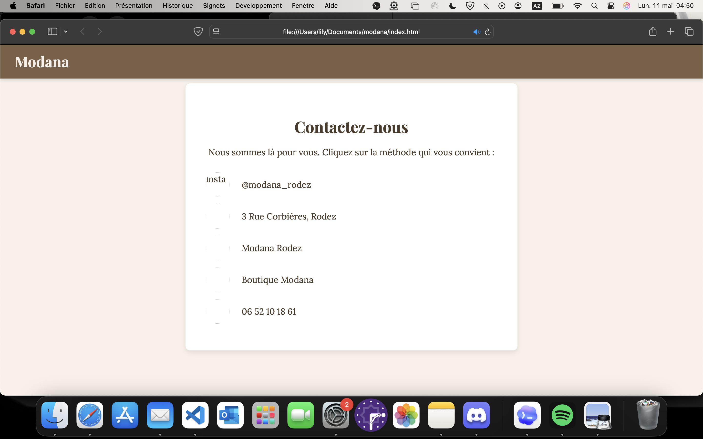
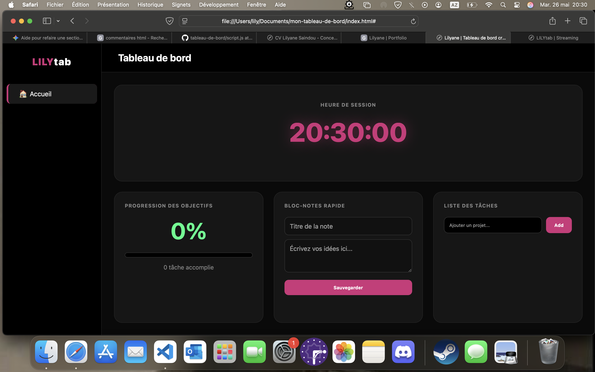
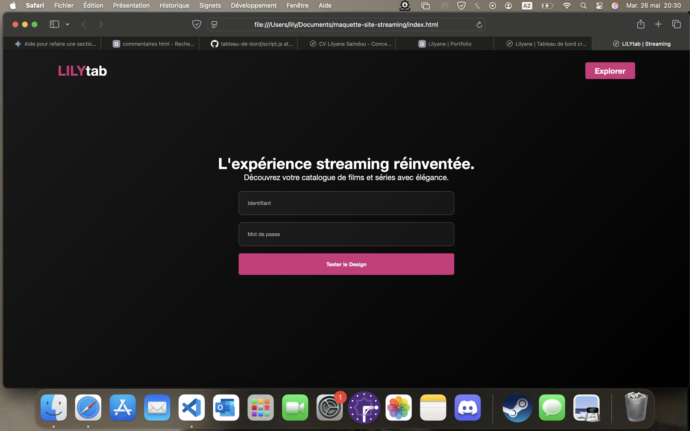
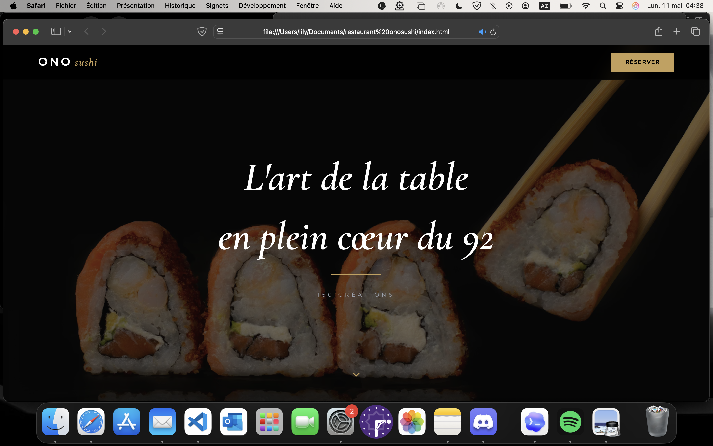

01.
Site vitrine Modana
Création d'un site vitrine pour une boutique avec un style minimaliste.
Projet Réel
Design / Code
HTML / CSS
Future Développeuse
No code
Mon aventure numérique a commencé très tôt :
Enfant, je bidouillais déjà l'ordinateur de mon père...
Pourtant, j'ai longtemps tenté de me conformer à un parcours classique et sérieux. Ma famille, me répétait que je deviendrais la future avocate de la lignée. J'ai donc essayé de suivre cette voie pour les rendre fiers, en mettant de côté mon intérêt pour le numérique.
Mais plus j'avançais, plus je sentais que ce cadre ne me correspondait pas. Je n'étais pas l'actrice de mon propre chemin.
Aujourd'hui, j'ai réajusté ma trajectoire.
Mon déclic a commencé lors d'une formation de Développeuse Full Stack. C'est là que je suis tombée amoureuse du Front-End et de la résolution de problèmes. Mais plus j'avançais, plus je me heurtais à la lenteur des lignes de code traditionnelles.
Je suis convaincue qu'un outil performant est d'abord un outil qu'on prend plaisir à utiliser. Pour moi, l'esthétique et le design fluide ne sont pas de simples détails : c'est le cœur de l'expérience utilisateur.
Le code ne doit pas être une barrière, mais un accélérateur. Intriguée par l'alliage entre logique et design, je vois le No-Code comme le moyen ultime de donner vie à des idées sans compromis.

Création d'un site vitrine pour une boutique avec un style minimaliste.

Outil personnel de productivité avec gestion de tâches dynamique en JS.

Interface de streaming moderne avec catalogue interactif.

Site vitrine premium pour un restaurant japonais (UI/UX, Glassmorphism).